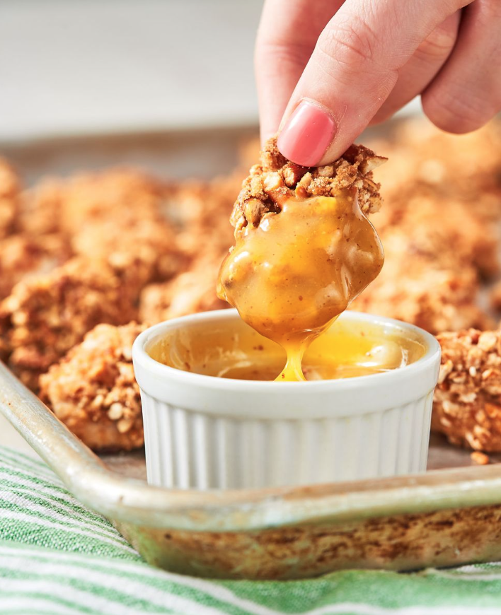

Honey Mustard Pretzel Chicken

Description
Pretzel crumbed chicken with honey mustard dipping sauce. Enough said!
Ingredients
- Cooking spray
- 6 c. tiny pretzel twists
- 1/4 c. Honey Mustard Dipping Sauce, plus more for serving
- 2 large eggs
- 600g boneless skinless chicken breasts, cut into bite-size pieces
- 1/2 tsp. salt
- 1/4 tsp. freshly ground black pepper
- 1/4 c. all-purpose flour
Steps
- Preheat oven to 220°C. Grease two rimmed baking sheets with cooking spray. In a large resealable plastic bag, crush pretzels until mixture is coarsely ground. Transfer to a shallow bowl.
- In another shallow bowl, whisk honey mustard and egg together. In a medium bowl, season chicken with salt and pepper and toss to coat evenly with flour.
- Dip each chicken piece in honey mustard mixture, letting excess drip off, then roll in pretzels, pressing in the pretzels with your fingers. Transfer to prepared baking sheets in an even single layer and spray with cooking spray.
- Bake, turning halfway through, until chicken is cooked through and pretzels are golden, 12 to 15 minutes.
- Serve chicken with more honey mustard.